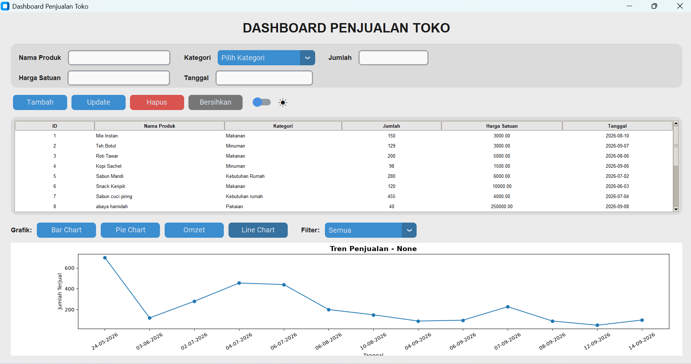
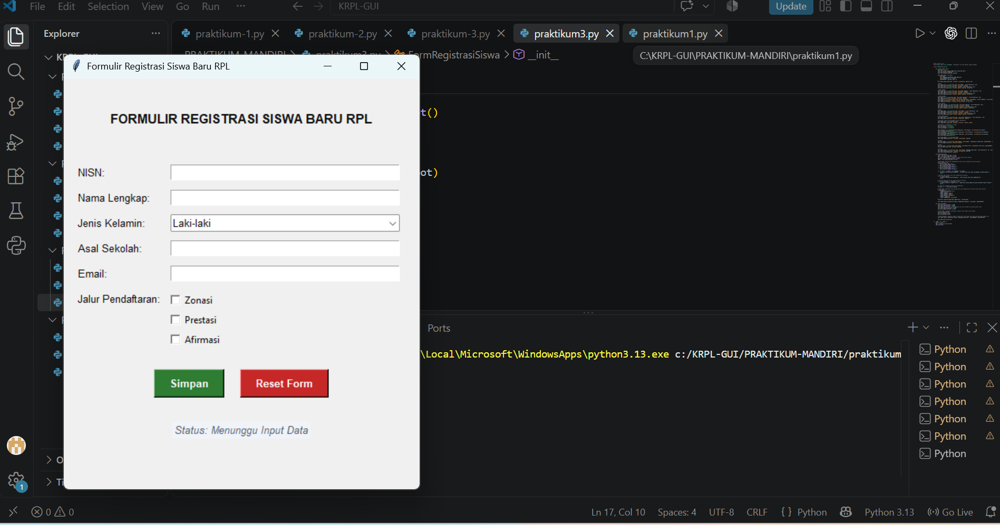
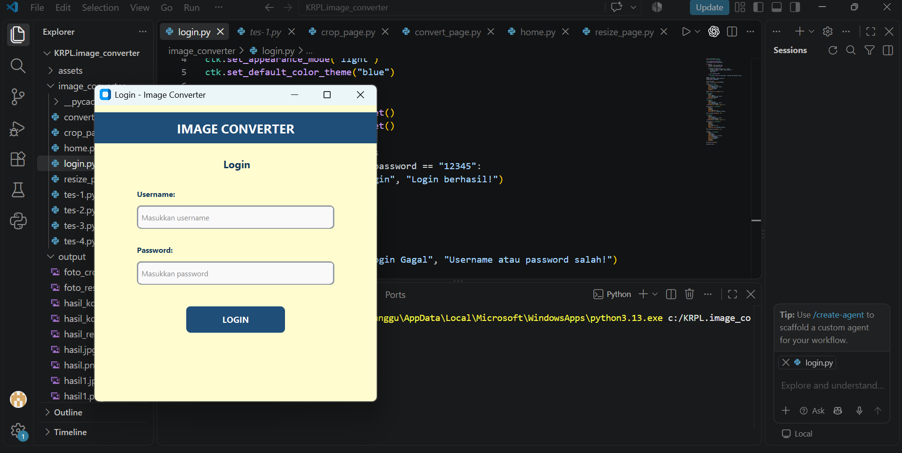

Pemrograman Web
Dapat membuat tampilan halaman website yang responsif menggunakan HTML dan CSS.

Kelas: XI RPL 1 | SMK Brantas Karangkates
Sebagai seorang pelajar yang mendalami konsentrasi Rekayasa Perangkat Lunak, saya memiliki ketertarikan serta antusiasme yang tinggi dalam mengeksplorasi dunia pengembangan web, perancangan basis data yang terstruktur, hingga berbagai pemanfaatan teknologi digital modern guna menciptakan solusi yang aplikatif dan bermanfaat.
Dapat membuat tampilan halaman website yang responsif menggunakan HTML dan CSS.
Mampu merancang dan mengelola basis data menggunakan MySQL atau MariaDB.
Mampu mengoperasikan perangkat perkantoran untuk pengolahan data dan laporan.
Dapat merancang antarmuka serta pengalaman pengguna aplikasi yang intuitif, bersih, dan nyaman dipandang sebelum masuk ke tahap pembuatan kode.


